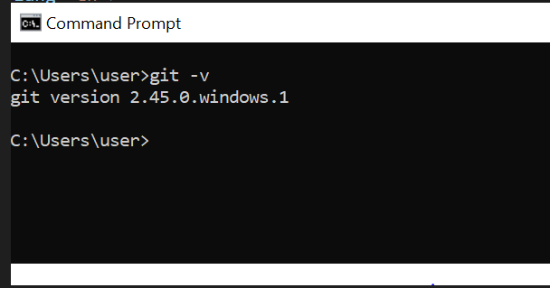
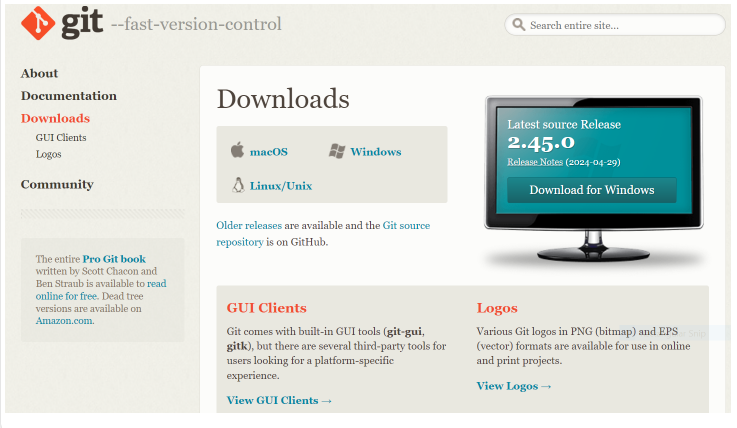
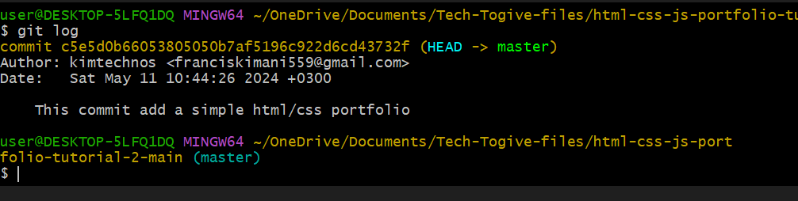
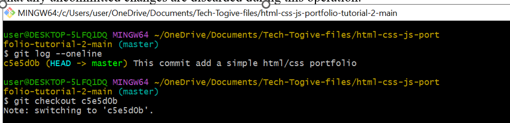
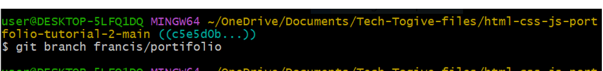
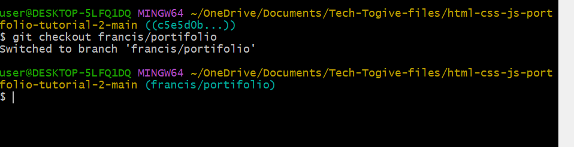
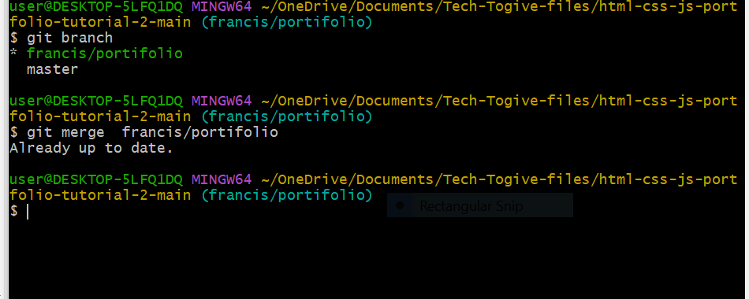

Frustrated with lost work or untraceable changes? Version control systems like Git are here to save the day! Git, the most popular option, tracks changes in your files, letting you rewind to any point in time. This blog series will be your guide to mastering Git and its partner, GitHub, teaching you how to manage your projects like a pro.
Version Control Systems
Let's take a time to define a version control system before delving further into Git. Developers can monitor changes made to their codebase with the use of a version control system (VCS). It offers developers a distributed or centralized repository where they may work together, save, and manage their code.
Although the focus of our blog series is Git, it's important to highlight a few additional well-liked version control systems as well:
Subversion (SVN): SVN functions as a centralized version control system where files and their modifications are stored in a central repository. Though widely utilized in the past, its popularity has waned with the emergence of Git, which offers distributed capabilities and a richer set of features.
Mercurial: Mercurial resembles Git in being a distributed version control system, boasting an intuitive interface. It excels in managing substantial projects and offers scalability, making it a compelling alternative to Git.
Perforce: Tailored for enterprise-grade projects, perforce operates as a centralized version control system. Its feature set includes sophisticated functionalities such as atomic commits, precise access control mechanisms, and high-performance capabilities.
Installing Git
To verify if Git is installed on your machine, you can open a terminal or command prompt and execute the following command: git –version or git -v

This command will display the installed version of Git if it's available. If Git is not installed, you'll likely receive an error message indicating that the command is not recognized.
If it's not installed, you can easily download it from the official Git website at https://git-scm.com/downloads. Simply select the installer that matches your operating system and follow the installation instructions provided. Once installed, you'll be able to use Git commands in your terminal or command prompt.

Configuring Git
To set up Git with your username and email address, you can execute the following commands in a terminal or command prompt:
Make sure to replace "Your Name" with your actual name and "your-email@example.com" with your email address. These configurations are essential for identifying who made the changes when you commit them.
Initializing a Git Repository
To initialize a Git repository for your project, navigate to the root folder of your project using a terminal or command prompt, and then execute the following command: git init
This command initializes a new Git repository in the current directory, marking it as the root of your project. After running this command, Git will begin tracking changes to files within this directory.
Adding Files to the Staging Area
Checking Untracked Files: Before adding files to the staging area, you can use the git status command to see which files are untracked (i.e., Git is not currently monitoring changes to them). Untracked files are typically new files that haven't been added to the repository yet. To check for untracked files, run:
This command adds a specific file to the staging area.
Alternatively, you can use the `. ` notation to add all modified and new files in the current directory and its subdirectories: git add.
This command adds all modified and new files to the staging area.
Checking Staged Files: After adding files to the staging area, you can use the git status command again to see which files are staged for the next commit. Staged files are those that have been added to the staging area but haven't been committed yet. Running git status will display both staged and unstaged changes.
Committing Changes
Committing Changes
Put a clear explanation of the changes made in the “Commit message". It is advisable to provide concise and insightful commit messages in order to accurately describe the changes. Below is a demonstration of an example.
You can use the git log command as follows to view previous commits:

Use the command git log --oneline to view previous commits together with their corresponding commit-hash before using git checkout commit-hash to roll back to a specific commit.
As shown below, replace commit-hash with the commit's hash that you wish to revert to. Note that any uncommitted changes are discarded during this operation.

Branches
Git branches serve as references to particular commits within the repository's timeline. They facilitate simultaneous development by accommodating multiple streams of work without causing conflicts. Branches are instrumental in segregating features, bug fixes, or experimental changes.
Creating a Branch
To initiate a new branch in Git, utilize the command git branch branch-name. Substitute "branch-name" with your preferred name for the branch. This action establishes a fresh branch referencing the same commit as the current branch.

Viewing All Branches
To view all branches in a Git repository, you can use the git branch command:
Switching Active Branches
To switch to a different branch in Git, you can use the git checkout branch-name command:
Replace branch-name with the name of the branch you want to switch to. For example, if you have a branch named "francis/portifolio" , you would use:

Starting from Git version 2.23, you can also use the git switch branch-name command: Both commands will make the specified branch the active branch, updating the working directory to reflect the files and history of that branch
Merging a Branch
To integrate changes from another branch into the current branch, employ the command git merge branch-name . Substitute branch-name with the name of the branch you intend to merge into the current branch. This action combines the alterations from the specified branch into the current branch.

Deleting a branch
To delete a branch in Git, you can use the git branch -d branch-name command:
Replace branch-name with the name of the branch you want to delete. This command deletes the specified branch if it has already been fully merged into the current branch.
Next Steps
Congratulations on mastering the basics! Now, it's time to explore branching strategies for parallel development and collaboration features like pull requests on platforms such as GitHub.
Practice pushing and pulling changes between local and remote repositories, and learn about resolving merge conflicts. These steps will enhance your Git proficiency and streamline your workflow.